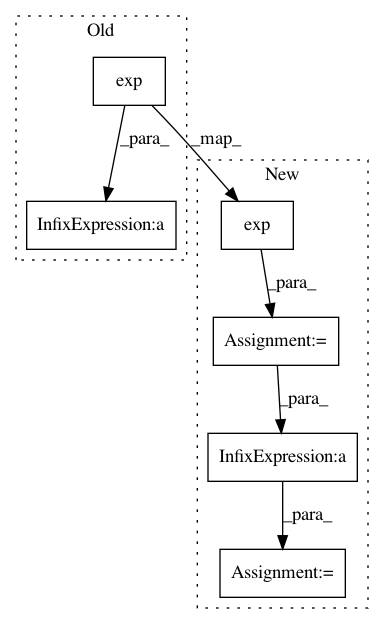

fc3cea17d2a8caaded3319dca1b1ae46468a57c0,gluoncv/nn/coder.py,NormalizedBoxCenterDecoder,hybrid_forward,#NormalizedBoxCenterDecoder#Any#Any#Any#,135
Before Change
p = F.split(x, axis=-1, num_outputs=4)
ox = F.broadcast_add(F.broadcast_mul(p[0] * self._stds[0] + self._means[0], a[2]), a[0])
oy = F.broadcast_add(F.broadcast_mul(p[1] * self._stds[1] + self._means[1], a[3]), a[1])
ow = F.broadcast_mul(F.exp(p[2] * self._stds[2]) + self._means[2], a[2]) / 2
oh = F.broadcast_mul(F.exp(p[3] * self._stds[3]) + self._means[3], a[3]) / 2
return F.concat(ox - ow, oy - oh, ox + ow, oy + oh, dim=-1)
After Change
p = F.split(x, axis=-1, num_outputs=4)
ox = F.broadcast_add(F.broadcast_mul(p[0] * self._stds[0] + self._means[0], a[2]), a[0])
oy = F.broadcast_add(F.broadcast_mul(p[1] * self._stds[1] + self._means[1], a[3]), a[1])
tw = F.exp(p[2] * self._stds[2] + self._means[2])
th = F.exp(p[3] * self._stds[3] + self._means[2])
if self._clip:
tw = F.minimum(tw, self._clip)
th = F.minimum(th, self._clip)
ow = F.broadcast_mul(tw, a[2]) / 2
oh = F.broadcast_mul(th, a[3]) / 2
return F.concat(ox - ow, oy - oh, ox + ow, oy + oh, dim=-1)
In pattern: SUPERPATTERN
Frequency: 3
Non-data size: 6
Instances
Project Name: dmlc/gluon-cv
Commit Name: fc3cea17d2a8caaded3319dca1b1ae46468a57c0
Time: 2018-07-20
Author: 13162287+ijkguo@users.noreply.github.com
File Name: gluoncv/nn/coder.py
Class Name: NormalizedBoxCenterDecoder
Method Name: hybrid_forward
Project Name: keras-team/keras
Commit Name: 01d5e7bc4782daafcfa99e035c1bdbe13a985145
Time: 2016-07-16
Author: francois.chollet@gmail.com
File Name: examples/lstm_text_generation.py
Class Name:
Method Name: sample
Project Name: OpenNMT/OpenNMT-py
Commit Name: 17bbba518b4b8df27f573bbcae3a478098d698f1
Time: 2019-12-12
Author: pltrdy@gmail.com
File Name: onmt/translate/translator.py
Class Name: Translator
Method Name: _report_score